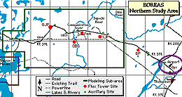
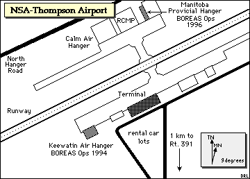
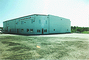
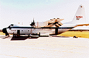
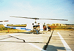
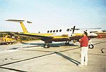
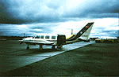
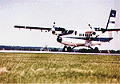
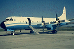

BOREAS Operations was the nerve center of the Northern Study Area. All major actions were coordinated through here, especially scheduling aircraft operations and overflights of sites.
 "BOREAS Ops", as it was called, was located in the Keewatin Air Hanger at the Thompson Airport in 1994. This was very convenient, as the Airport was between all of the sites (to the west on Rt. 391) and the town of Thompson. In 1996, BOREAS Ops was located in the Manitoba Provincial Hanger (on the other side of the airport), accessable by North Hanger Road off of Rt. 391.
"BOREAS Ops", as it was called, was located in the Keewatin Air Hanger at the Thompson Airport in 1994. This was very convenient, as the Airport was between all of the sites (to the west on Rt. 391) and the town of Thompson. In 1996, BOREAS Ops was located in the Manitoba Provincial Hanger (on the other side of the airport), accessable by North Hanger Road off of Rt. 391.
 Location of the NSA within Canada. |
 Location of BOREAS Operations within the NSA. |
|  Map of the Northern Study Area Operations at Thompson Airport. | |
| NSA Operations, Thompson Airport [actually, the location of the SRC Suite A mesonet tower at the airport] also called NSA-9BS-YTHSA (click here for detailed info) |
||
| Latitude: 55.804 | UTM Easting: 570580 | BOREAS X: 817.1 |
| Longitude: -97.874 | UTM Northing: 6184839 | BOREAS Y: 612.1 |
| Elevation (ASL): 220.97 m | UTM Zone: 14 | |
|  The Keewatin Air Hanger: site of BOREAS Ops 1994 | Dr. Piers Sellers working in Ops, 1994 |
|  The NASA C-130 |  The NASA Helicopter |
|  The University of Wyoming King Air |  The Ontario Chieftain |
|  The NRC Twin Otter |  The NCAR Electra |
Related Pages:
 BOREAS Home
BOREAS Home
 Study Region Overview
Study Region Overview
 Northern Study Area (NSA)
Northern Study Area (NSA)
 NSA Operations (NSA-Ops)
NSA Operations (NSA-Ops)
 SSA Operations (SSA-Ops)
SSA Operations (SSA-Ops)
 SSA Airport (Prince Albert)
SSA Airport (Prince Albert)
Revison Date: January 25, 1999
{kind=link}
{kind=link}
{kind=link}
{kind=link}
{kind=link}
{kind=link}
{kind=link}
{kind=link}